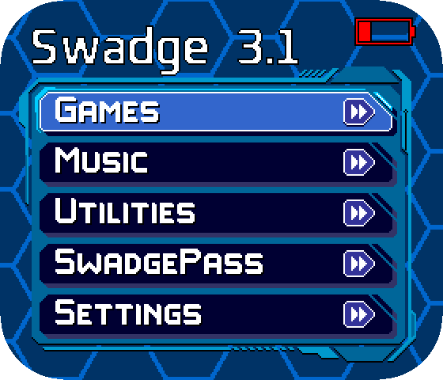

Connect one end of a USB-C cable to your Swadge's USB-C port, located next to the power switch.
Set your Swadge's power switch to the USB position.
Hold down the Swadge's Program button (Up on the D-Pad).
While still holding down the Program button, plug the other end of the USB cable into your computer.
If this is done correctly, the eye LEDs should light up but the display should not turn on.
Release the Program button.
Click "Connect" below to locate your Swadge and begin the update.
Oh no! Your browser does not support WebSerial. Supported browsers are Google Chrome/Chromium, Microsoft Edge, or Opera. Mobile browsers are not supported.
Please either use a supported browser, or download the Flashing Utility and follow the Flashing Utility instructions.
No Swadge was found! Please ensure you are holding Up button before plugging the Swadge in.
You may also try removing the Swadge's batteries and connecting the USB cable between your
Swadge and Computer, then sliding the power switch from BATT to USB
while holding Up on the D-Pad.
You may need to install a driver in order to connect the Swadge. These drivers can be installed by the Zadig tool.
Please make sure that the device is in flashing mode before running the tool and that it detects the ESP32-S2 device before installing the drivers.
The Zadig tool might detect several USB interfaces of ESP32-S2.
Please install the WinUSB driver for only that interface for which there is no driver installed (probably it is Interface 2) and don't re-install the driver for the other interface.
There was an error fetching firmware data. Please try again!
It's done!
Now, unplug your Swadge, then turn it back on. You should see the main menu, with the updated title showing "Swadge 3.1" as in the image below.
If you do not see the new version listed, then the update was not successful and you should try again.
If the Swadge's display does not turn on, then the update may have been interrupted and you should try again.
